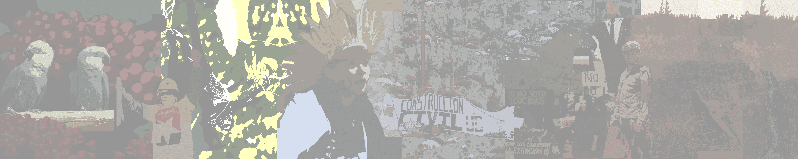

Nuestra historia
FORMACIÓN DEL COLECTIVO
El colectivo se consolidó formalmente a través de un acuerdo bilateral entre dos universidades (la Universidad Nacional de Santiago del Estero y la Universidad de Tolima), al que se sumaron las demás universidades miembros. Esto es el resultado de cuatro años de trabajo, que comenzó en 2016, con la iniciativa de la Universidad Pontificia Bolivariana e inspirado en el trabajo de más de 15 años de EArte Brasil (disponible en: http://EArte.net/).
HISTORIA DE LA EDUCACIÓN AMBIENTAL EN AMÉRICA LATINA Y EL CARIBE
Para justificar la pertinencia e importancia del Colectivo y sus objetivos, es necesario recordar algo de la historia de la educación ambiental. América Latina cuenta con una trayectoria de más de 30 años de experiencia en educación ambiental, con numerosas reflexiones, aportes teóricos y trabajos de campo en todos los niveles educativos a lo largo y ancho del continente. Esta región fue la única que logró implementar las sugerencias de las Naciones Unidas para crear una Red de Formación Ambiental, consolidada en 1982 (Sáenz, 2012). El trabajo realizado desde aquí fue fundamental para formar, promover y respaldar las iniciativas nacionales en educación ambiental (Corbetta, 2019; Eschenhagen, 2016; Foladori y González Gaudiano, 2001).
La educación ambiental a lo largo de estas décadas se ha consolidado como un campo de conocimiento importante y las universidades resultan ser un espacio importante de producción y reproducción de este conocimiento. A la vez, para que un campo de conocimiento se pueda fortalecer y mejorar requiere de reflexiones críticas, sin embargo, estas no podrán realizarse si no existe una sistematización mínima de lo producido. De ahí, que, al explorar el trabajo realizado por Brasil, quienes desde el año 2000 vienen recogiendo y sistematizando en una base de datos a partir de las tesis de maestría y doctorado que traten la relación entre procesos formativos y ambiente, los aportes y avances investigativos, resulta ser un ejemplo perfecto a seguir (http://EArte.net/). Es decir, para que América Latina pueda seguir fortaleciendo su educación ambiental, un insumo indispensable será tener una base de datos especializada para hacer un seguimiento del conocimiento producido, así como para realizar meta-investigaciones.
De ahí entonces, que el ejemplo de Brasil inspiró para conformar un grupo seminal latinoamericano para ampliar esa base de datos ya existente a otros países. Es así, como se invitaron en el 2016 en el marco del Seminario Latinoamericano de Investigación, organizado por la Universidad Pontificia Bolivariana, con el apoyo del PNUMA, a investigadores comprometidos de varias universidades de Cuba, México, Chile, Argentina y Colombia, y por supuesto Brasil, para iniciar este proyecto.
PRIMEROS PASOS
El primer paso consistió en en realizar un seminario internacional denominado "La producción de conocimiento en la universidad: metodologías y políticas de investigación", para socializar y presentar la trayectoria del trabajo ya realizado por Brasil, así como tematizar y reflexionar teóricamente en qué consiste un estado del arte. Este ejercicio fue muy importante para acordar y aclarar una metodología en común, basada ya en la trayectoria y experiencia de Brasil, así como diseñar una ruta de trabajo para todos los grupos de las diferentes universidades. Del seminario salió un libro resultado de investigación en cual se publicaron dos capítulos sobre qué es un estado del arte (Eschenhagen et al., 2018).
En sus inicios – y esto es muy importante de señalar – el trabajo realizado fue producto del interés, la iniciativa y voluntad de todos los investigadores, en sus tiempos “libres”, ya que era un trabajo aún no formalizado en proyectos de investigación, y mucho menos aún reconocido por las respectivas universidades en sus jornadas laborales. Pero en la medida que se comenzaron a concretar las búsquedas y se empezaron a especificar las investigaciones y a vincular tesis de estudiantes, se vio cada vez más la necesidad de proponer proyectos de investigación para obtener los apoyos necesarios de las universidades, los cuales en su mayoría aún consisten apenas en tiempos de trabajo, y no tanto en apoyos financieros.
Es así como comenzaron a emerger los primeros resultados del trabajo de búsqueda de tesis y se vio también la necesidad de un segundo encuentro que tuvo lugar en abril del 2019 en la Universidad del Tolima (Colombia) que tuvo dos objetivos. El primero, fue socializar los resultados preliminares y con ello promover un espacio de reflexión sobre educación ambiental superior en el Seminario de Educación Ambiental en las universidades latinoamericanas: retos perspectivas y apuestas organizado por el Colectivo. Espacio que se aprovechó para dar a conocer el Colectivo y presentar sus trabajos, así como invitar a un público más amplio a compartir sus investigaciones en torno a cuatro ejes de reflexión identificados por el Colectivo a través de los resultados, como necesarios para fortalecer el propio campo de educación ambiental superior. Los ejes eran: 1) retos de la investigación en educación ambiental, 2) tensiones en el campo de la educación ambiental, 3) fundamentación teórica de la educación ambiental superior y 4) ambientalización de la educación superior. El segundo objetivo, fue realizar un trabajo interno intensivo, a manera de taller, para consolidar el trabajo investigativo de todo el equipo regional. De este seminario salió un libro (ya en prensa), titulado Fundamentos y reflexiones teóricas para pensar y proponer una educación ambiental superior.
En esa etapa del trabajo de investigación colectivo finalmente se hizo inmanente la necesidad de una formalización oficial, como Colectivo propiamente dicho, y surge la Red Colectivo de Investigadores en Educación Ambiental Superior en América Latina y el Caribe – EArte ALyC, la cual se logró a través de la firma del acuerdo de voluntades entre las diferentes universidades.